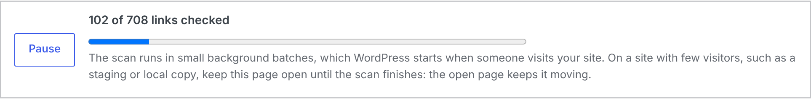
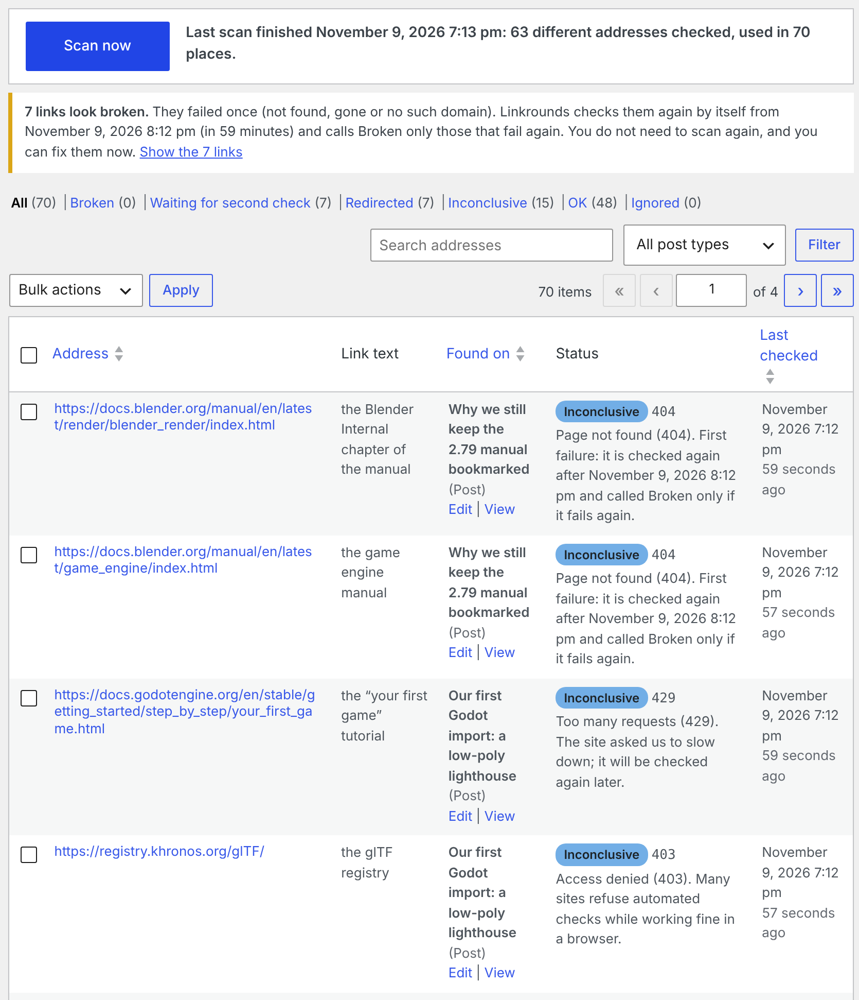
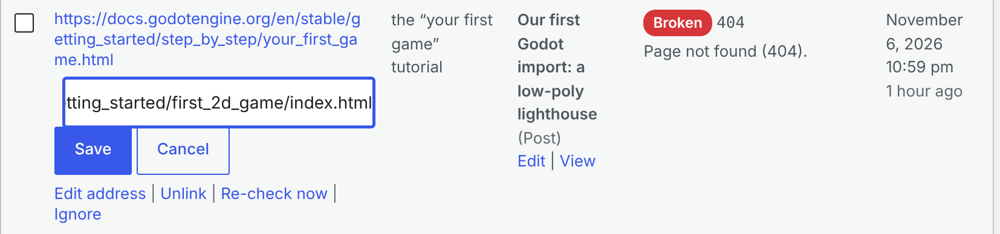
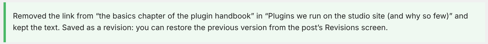

Linkrounds quick start
Installing Linkrounds, your first scan and your first fix, then Linkrounds Pro. Back to the Linkrounds product page.
Install (WordPress 6.5 or newer, PHP 7.4 or newer)
- Download
linkrounds-1.2.2.zip. Do not unzip it. - In WordPress, open Plugins > Add New Plugin, click Upload Plugin, choose the zip, then Install Now and Activate.
- Open Tools > Linkrounds.
There is nothing to sign up for: no account, no key and no link limit. Once Linkrounds is listed on WordPress.org you will also be able to search for "Linkrounds" under Plugins > Add New Plugin.
First scan
- Click Scan now. Linkrounds reads your published posts, pages, public custom post types, synced patterns, the custom links in classic menus, and block-theme Navigation menus, and checks every link and image in them.
- The count climbs as links are checked ("102 of 708 links checked"). Pause and Resume are next to it.

Linkrounds during a scan: the Pause button, '102 of 708 links checked' with a progress bar, and the note 'The scan runs in small background batches, which WordPress starts when someone visits your site. On a site with few visitors, such as a staging or local copy, keep this page open until the scan finishes: the open page keeps it moving.'" width="963" height="119" loading="lazy">wp-cron.php. The same goes for the second checks an hour later: on a quiet site, leave the Linkrounds screen open and it runs them when they are due, then reloads to show the result.
The four answers
- Broken: not found (404), gone (410), or the domain does not exist, and the same thing happened again on a second check at least an hour later.
- Redirected: the address forwards to one that works. The final address is shown. If it lands on the site's home page or on a search or "not found" page, the reason says so, because sites often do that when a page was removed.
- Inconclusive: the other site blocked the check (403, 999), wanted a login (401), asked us to slow down (429), had a server error or did not answer in time. The reason is given. A link that failed once and is waiting for its second check is here too, with the time of that check. Inconclusive is never counted as broken.
- OK: the link works.
So straight after your first scan, Broken shows 0. That does not mean nothing was found: a line above the results leads with how many links look broken (they failed once), and says when Linkrounds checks them again by itself, for example "from 8:12 pm (in 54 minutes)". You do not need to scan again, and you can fix those links right away from Waiting for second check. Those that fail the second check move to Broken. The wait is 1 hour by default; you can choose 6 or 24 hours under Settings.

Each row shows the page the link is on (with Edit and View), the full address, the link text, the status code, the reason and when it was last checked. Filter by answer or post type, search by address, and use Re-check now on any row.
Fix a link, and undo it
- Hover a row. Choose Edit address, type the new address and click Save; or choose Unlink to remove the link and keep its words.
- The message says what changed. Only that link in that post changes, and an edited address is checked straight away. A File block links to its file twice (the name and the Download button); Edit address on either row changes both, and the message says so.
- To undo, open the post, then Revisions, and restore the version before the change. The old link comes back as a new link, so it waits for its second check again before it is called Broken.


To fix several links at once, tick their rows, pick Unlink or Edit address under Bulk actions and click Apply. Only the rows you ticked change, and the message says what was done (or that nothing was changed). Menu items have no revisions in WordPress; the message after a menu fix says so, and you undo it under Appearance > Menus.
Exclusions and re-checks
- Settings > Excluded addresses: one per line.
example.comalso covers its subdomains;*is a wildcard, as in*.example.comorexample.com/members/*. - Untick post types, synced patterns or menu links you do not want scanned.
- Ignore on a row hides that one link; the Ignored filter lists it and undoes it.
- Broken and Inconclusive links are re-checked every day, and saving a post re-checks its links, so a link you fix in the editor leaves the list without a new scan.
Linkrounds Pro
- Install and activate the free plugin first.
- Install
linkrounds-pro.zipthe same way: Plugins > Add New Plugin > Upload Plugin, Install Now, Activate. WordPress will not activate Pro without the free plugin. - Open Tools > Linkrounds > Schedule & email. Choose daily, weekly or monthly and the hour (in the time zone set under Settings > General), add the addresses that should get the report, one per line, and save.
- Click Send a test email. The message at the top says straight away whether WordPress could send it, and if not, WordPress's own reason (for example "Could not instantiate mail function."). If WordPress sent it but it does not arrive, look in spam, then ask your host about outgoing mail.
- On the Results tab, Export CSV of these results downloads the rows of the current filter, all pages. Menu links are listed as "Menu: name", with the menu editor as the edit link.
The email report is sent after each scheduled scan, once the links that failed have had their second check, through your site's own mail setup. Many hosts need an SMTP plugin before WordPress can send mail; the test email tells you. If your site's mail setup ever refuses a report, the Schedule & email tab shows when and WordPress's reason, a line above the results points to it, and the links it would have listed go into the next report.

Limits
- Not checked in version 1: custom fields, page-builder data stored outside the post content, widgets, comments, theme options, excerpts, templates and template parts edited in the Site Editor,
srcsetimage sets, and video or embed addresses. - A site that serves 404 to anything but a browser ends up Broken although readers see the page. Open the link; if it works, Ignore it.
- A missing file in your uploads folder is checked on disk, so a redirect for an old upload address is not seen. Point the links at the new file with Edit address, or Ignore them.
- No network-wide view on multisite; it works per site.
Privacy
To check a link, your server sends a HEAD request (and a GET when HEAD does not succeed) to the linked address. Addresses in private or local networks (10.x, 192.168.x, 127.0.0.1) are never requested, except your own site's address: links to your own site that Linkrounds cannot match to a post, page, the home page or an upload are requested from your site, so on a local or staging install those requests go to a local address. Nothing else is sent: nothing about your site, your users or your content goes to Ochrestack or to any other service. No account, no telemetry, no licence or update check. Pro's email report and test email go only to the addresses you set.
Support
Email support@ochrestack.com with your WordPress and PHP versions, the Linkrounds version, and the address and reason shown on the row that puzzles you.